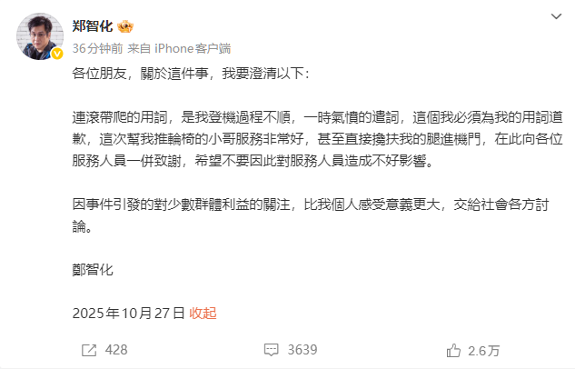

@maitian99 补充2个信息
1.深航提供机上轮椅服务,但国际航班不提供
2.连滚带爬是成语,不是说爬着走,其形容仓皇、狼狈的样子.情感指向多用于描述他人窘态,具有轻微贬义色彩但无强烈批判性.《白鹿原》二八章中这样写道：刚睡着又被一个奇异的梦惊醒来，再也无法重新入睡，便往着拐杖在茫茫雪原上连滚带爬朝北走去

1.深航提供机上轮椅服务,但国际航班不提供
2.连滚带爬是成语,不是说爬着走,其形容仓皇、狼狈的样子.情感指向多用于描述他人窘态,具有轻微贬义色彩但无强烈批判性.《白鹿原》二八章中这样写道：刚睡着又被一个奇异的梦惊醒来，再也无法重新入睡，便往着拐杖在茫茫雪原上连滚带爬朝北走去

这是非常残忍的！郑智化，下肢瘫痪的残障人士，因为廊桥和飞机有20多厘米高度差距，轮椅无法登机，吐槽了深圳机场几句，说自己“连滚带爬”才登上飞机，最后被网民骂得还道歉了。网民说，看视频你没有“连滚带爬”啊。。。对残障人士的不便，不反思问题，反而咬文嚼字，这是非常残忍的。可耻。😡😡😡 https://t.co/MNVkcvlnYm